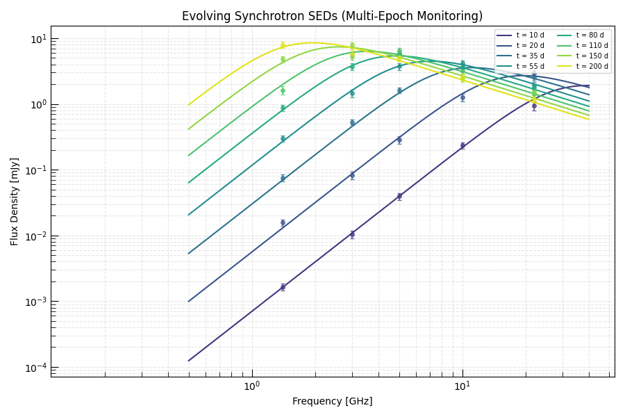
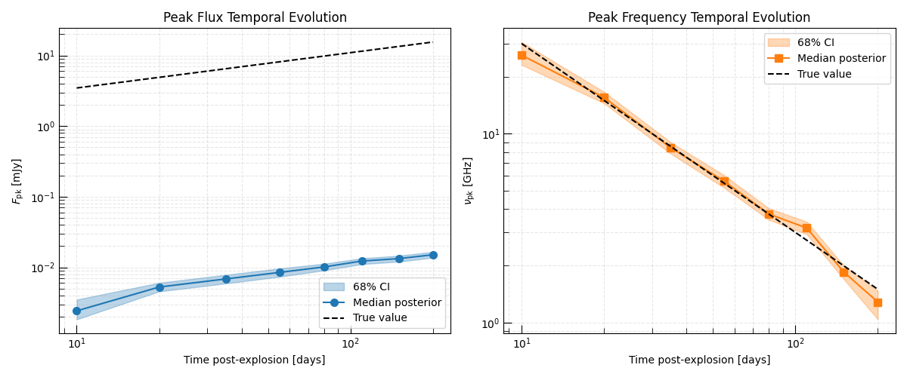
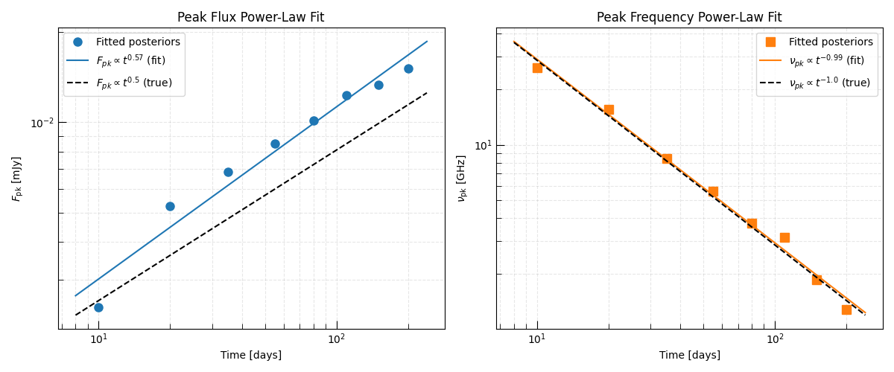

Note
Go to the end to download the full example code.
Multi-Epoch SED Fitting: Tracking Shock Evolution#
A densely sampled radio monitoring campaign — spanning multiple epochs over weeks to months — allows us to track how the synchrotron SED evolves over time. By fitting the SED independently at each epoch, we can extract the time dependence of the spectral peak:
The temporal indices \(\beta_F\) and \(\beta_\nu\) are direct probes of the shock dynamics and CSM density profile. For a Chevalier self-similar shock in a wind-stratified CSM (\(\rho \propto r^{-2}\)) and SSA-dominated absorption, the classical scaling relations give:
Measuring deviations from these scalings indicates departures from the standard wind-CSM model (e.g., a dense uniform shell, a non-standard ejecta profile, or free-free rather than SSA absorption).
Overview#
Simulate a multi-epoch radio monitoring campaign — synthetic fluxes at 5 frequencies and 8 epochs, following Chevalier SSA scaling.
Fit a synchrotron SED independently at each epoch with MCMC.
Extract \(F_{\rm pk}(t)\) and \(\nu_{\rm pk}(t)\) from the posteriors.
Fit power laws to the temporal evolution.
Interpret the scaling indices in terms of shock dynamics.
Relevant API#
Synchrotron_SSA_SBPL_ModelInferenceProblemEmceeSampler
Setup#
import matplotlib.pyplot as plt
import numpy as np
from astropy import units as u
from triceratops.models.SEDs.synchrotron import Synchrotron_SSA_SBPL_Model
from triceratops.utils.plot_utils import set_plot_style
set_plot_style()
rng = np.random.default_rng(99)
Simulate a Multi-Epoch Radio Monitoring Campaign#
We generate synthetic observations spanning 10 to 200 days post-explosion. The SED parameters evolve with time following Chevalier (1982) scaling for a wind-CSM supernova shock:
\(\nu_{\rm pk} \propto t^{-1}\) (SSA frequency falls as shock expands)
\(F_{\rm pk} \propto t^{1/2}\) (total synchrotron power rises as more CSM is swept up)
These scalings follow directly from the Chevalier self-similar solution with \(n = 10\), \(s = 2\).
sed_model = Synchrotron_SSA_SBPL_Model()
# Observing epochs (days post-explosion)
epochs = np.array([10.0, 20.0, 35.0, 55.0, 80.0, 110.0, 150.0, 200.0])
t_ref = 30.0 # reference epoch (days)
# Reference SED parameters at t = t_ref
F_pk_ref = 6.0 * u.mJy
nu_pk_ref = 10.0 * u.GHz
p = 3.0
s = -1.0
# Power-law indices for temporal evolution
beta_nu = -1.0 # nu_pk ~ t^-1
beta_F = 0.5 # F_pk ~ t^0.5
# Observing frequencies (5 bands: 1.4, 3, 5, 10, 22 GHz)
frequencies = u.Quantity([1.4, 3.0, 5.0, 10.0, 22.0], u.GHz)
noise_frac = 0.12
# Store all simulated data
sim_data = {}
for t in epochs:
F_pk_t = (F_pk_ref * (t / t_ref) ** beta_F).to(u.mJy)
nu_pk_t = (nu_pk_ref * (t / t_ref) ** beta_nu).to(u.GHz)
params_t = {"norm": F_pk_t, "nu_break": nu_pk_t, "p": p, "s": s}
true_flux_t = sed_model.forward_model({"frequency": frequencies}, params_t).flux_density
noise_t = rng.normal(size=frequencies.size, scale=noise_frac) * true_flux_t
obs_flux_t = true_flux_t + noise_t
obs_err_t = noise_frac * true_flux_t
sim_data[t] = {
"obs_flux": obs_flux_t,
"obs_err": obs_err_t,
"true_params": params_t,
"true_F_pk": F_pk_t,
"true_nu_pk": nu_pk_t,
}
Visualize the Evolving Radio SEDs#
Plot the true SED at each epoch as a family of curves, shifting in frequency and flux over time.
freqs_plot = np.geomspace(0.5, 40.0, 300) * u.GHz
cmap = plt.cm.viridis
epoch_colors = cmap(np.linspace(0.15, 0.95, len(epochs)))
fig, ax = plt.subplots(figsize=(9, 6))
for t, color in zip(epochs, epoch_colors):
params_t = sim_data[t]["true_params"]
curve = sed_model.forward_model({"frequency": freqs_plot}, params_t).flux_density
ax.loglog(freqs_plot.to_value(u.GHz), curve.to_value(u.mJy), lw=1.5, color=color, label=f"t = {t:.0f} d")
ax.errorbar(
frequencies.to_value(u.GHz),
sim_data[t]["obs_flux"].to_value(u.mJy),
yerr=sim_data[t]["obs_err"].to_value(u.mJy),
fmt="o",
color=color,
capsize=2,
ms=4,
alpha=0.7,
)
ax.set_xlabel("Frequency [GHz]")
ax.set_ylabel("Flux Density [mJy]")
ax.set_title("Evolving Synchrotron SEDs (Multi-Epoch Monitoring)")
ax.legend(loc="upper right", fontsize=7, ncol=2)
ax.grid(True, which="both", ls="--", alpha=0.3)
plt.tight_layout()
plt.show()

Fit the SED at Each Epoch#
We now fit the SED model independently at each epoch. The key free parameters are the peak normalization \(F_{\rm pk}\) and peak frequency \(\nu_{\rm pk}\).
from astropy.table import Table
from triceratops.data import InferenceData
from triceratops.data.photometry import RadioPhotometryEpochContainer
from triceratops.inference import GaussianCensoredLikelihood
from triceratops.inference.problem import InferenceProblem
from triceratops.inference.sampling.mcmc import EmceeSampler
epoch_posteriors = {}
for t in epochs:
obs = sim_data[t]
data_table = Table()
data_table["freq"] = frequencies
data_table["flux_density"] = obs["obs_flux"]
data_table["flux_density_error"] = obs["obs_err"]
data_table["flux_upper_limit"] = np.full(frequencies.size, np.nan) * u.mJy
photometry = RadioPhotometryEpochContainer(data_table)
inference_data = InferenceData.from_table(
sed_model,
photometry.table,
variables={"frequency": "freq"},
observables={
"flux_density": ("flux_density", "flux_density_error", "flux_upper_limit", None),
},
)
likelihood = GaussianCensoredLikelihood(model=sed_model, data=inference_data)
problem = InferenceProblem(likelihood=likelihood)
problem.set_prior("norm", "uniform", lower=0.1 * u.mJy, upper=50.0 * u.mJy)
problem.set_prior("nu_break", "uniform", lower=0.3 * u.GHz, upper=50.0 * u.GHz)
problem.set_prior("p", "uniform", lower=2.0, upper=5.0)
problem.parameters["norm"].initial_value = obs["true_F_pk"]
problem.parameters["nu_break"].initial_value = obs["true_nu_pk"]
problem.parameters["p"].initial_value = 3.0
problem.parameters["s"].initial_value = -1.0
problem.parameters["s"].freeze = True
sampler = EmceeSampler(problem, n_walkers=24)
result = sampler.run(5_000, progress=False)
samples = result.get_flat_samples(burn=1500, thin=5)
# Extract posteriors for norm (col 0) and nu_break (col 1)
epoch_posteriors[t] = {"samples": samples, "problem": problem}
F_med = np.median(samples[:, 0])
nu_med = np.median(samples[:, 1])
print(f" t = {t:5.0f} d | F_pk = {F_med:.2f} mJy | nu_pk = {nu_med:.2f} GHz")
t = 10 d | F_pk = 0.00 mJy | nu_pk = 26.04 GHz
t = 20 d | F_pk = 0.01 mJy | nu_pk = 15.56 GHz
t = 35 d | F_pk = 0.01 mJy | nu_pk = 8.44 GHz
t = 55 d | F_pk = 0.01 mJy | nu_pk = 5.59 GHz
t = 80 d | F_pk = 0.01 mJy | nu_pk = 3.76 GHz
t = 110 d | F_pk = 0.01 mJy | nu_pk = 3.17 GHz
t = 150 d | F_pk = 0.01 mJy | nu_pk = 1.85 GHz
t = 200 d | F_pk = 0.02 mJy | nu_pk = 1.28 GHz
Extract Peak Parameters and Plot Temporal Evolution#
From each epoch’s posterior we extract the median and 1-sigma credible interval for \(F_{\rm pk}\) and \(\nu_{\rm pk}\).
F_med_arr = np.array([np.median(epoch_posteriors[t]["samples"][:, 0]) for t in epochs])
F_lo_arr = np.array([np.percentile(epoch_posteriors[t]["samples"][:, 0], 16) for t in epochs])
F_hi_arr = np.array([np.percentile(epoch_posteriors[t]["samples"][:, 0], 84) for t in epochs])
nu_med_arr = np.array([np.median(epoch_posteriors[t]["samples"][:, 1]) for t in epochs])
nu_lo_arr = np.array([np.percentile(epoch_posteriors[t]["samples"][:, 1], 16) for t in epochs])
nu_hi_arr = np.array([np.percentile(epoch_posteriors[t]["samples"][:, 1], 84) for t in epochs])
# True values for comparison
F_true_arr = np.array([sim_data[t]["true_F_pk"].to_value(u.mJy) for t in epochs])
nu_true_arr = np.array([sim_data[t]["true_nu_pk"].to_value(u.GHz) for t in epochs])
fig, axes = plt.subplots(1, 2, figsize=(12, 5))
# Peak flux temporal evolution
axes[0].fill_between(epochs, F_lo_arr, F_hi_arr, alpha=0.3, color="C0", label="68% CI")
axes[0].plot(epochs, F_med_arr, "o-", color="C0", ms=7, label="Median posterior")
axes[0].plot(epochs, F_true_arr, "k--", lw=1.5, label="True value")
axes[0].set_xscale("log")
axes[0].set_yscale("log")
axes[0].set_xlabel("Time post-explosion [days]")
axes[0].set_ylabel(r"$F_{\rm pk}$ [mJy]")
axes[0].set_title("Peak Flux Temporal Evolution")
axes[0].legend()
axes[0].grid(True, which="both", ls="--", alpha=0.3)
# Peak frequency temporal evolution
axes[1].fill_between(epochs, nu_lo_arr, nu_hi_arr, alpha=0.3, color="C1", label="68% CI")
axes[1].plot(epochs, nu_med_arr, "s-", color="C1", ms=7, label="Median posterior")
axes[1].plot(epochs, nu_true_arr, "k--", lw=1.5, label="True value")
axes[1].set_xscale("log")
axes[1].set_yscale("log")
axes[1].set_xlabel("Time post-explosion [days]")
axes[1].set_ylabel(r"$\nu_{\rm pk}$ [GHz]")
axes[1].set_title("Peak Frequency Temporal Evolution")
axes[1].legend()
axes[1].grid(True, which="both", ls="--", alpha=0.3)
plt.tight_layout()
plt.show()

Fit Power Laws to the Temporal Scaling#
Fit \(\log F_{\rm pk} = \beta_F \log t + {\rm const}\) and \(\log \nu_{\rm pk} = \beta_\nu \log t + {\rm const}\) to recover the Chevalier scaling indices.
log_t = np.log10(epochs)
# Fit to median posteriors
beta_F_fit, log_F0_fit = np.polyfit(log_t, np.log10(F_med_arr), 1)
beta_nu_fit, log_nu0_fit = np.polyfit(log_t, np.log10(nu_med_arr), 1)
t_fit = np.geomspace(epochs[0] * 0.8, epochs[-1] * 1.2, 100)
fig, axes = plt.subplots(1, 2, figsize=(12, 5))
axes[0].loglog(epochs, F_med_arr, "o", color="C0", ms=8, label="Fitted posteriors")
axes[0].loglog(
t_fit, 10**log_F0_fit * t_fit**beta_F_fit, "C0-", label=rf"$F_{{pk}} \propto t^{{{beta_F_fit:.2f}}}$ (fit)"
)
axes[0].loglog(t_fit, 10**log_F0_fit * t_fit**beta_F, "k--", label=rf"$F_{{pk}} \propto t^{{{beta_F:.1f}}}$ (true)")
axes[0].set_xlabel("Time [days]")
axes[0].set_ylabel(r"$F_{\rm pk}$ [mJy]")
axes[0].legend()
axes[0].grid(True, which="both", ls="--", alpha=0.3)
axes[0].set_title("Peak Flux Power-Law Fit")
axes[1].loglog(epochs, nu_med_arr, "s", color="C1", ms=8, label="Fitted posteriors")
axes[1].loglog(
t_fit, 10**log_nu0_fit * t_fit**beta_nu_fit, "C1-", label=rf"$\nu_{{pk}} \propto t^{{{beta_nu_fit:.2f}}}$ (fit)"
)
axes[1].loglog(
t_fit, 10**log_nu0_fit * t_fit**beta_nu, "k--", label=rf"$\nu_{{pk}} \propto t^{{{beta_nu:.1f}}}$ (true)"
)
axes[1].set_xlabel("Time [days]")
axes[1].set_ylabel(r"$\nu_{\rm pk}$ [GHz]")
axes[1].legend()
axes[1].grid(True, which="both", ls="--", alpha=0.3)
axes[1].set_title("Peak Frequency Power-Law Fit")
plt.tight_layout()
plt.show()
print(f"\n=== Recovered power-law indices ===")
print(f" beta_F (fit): {beta_F_fit:.3f} (true: {beta_F:.1f})")
print(f" beta_nu (fit): {beta_nu_fit:.3f} (true: {beta_nu:.1f})")

=== Recovered power-law indices ===
beta_F (fit): 0.572 (true: 0.5)
beta_nu (fit): -0.994 (true: -1.0)
Physical Interpretation of the Scaling Indices#
The recovered scaling indices can be compared to the predictions of the Chevalier (1982) model for different CSM profiles.
For an SSA-dominated synchrotron peak in a wind CSM (\(s = 2\), \(\rho \propto r^{-2}\)) with outer ejecta index \(n = 10\):
\(\nu_{\rm pk} \propto t^{-1}\) — the SSA frequency falls as the shock radius expands and the column density drops.
\(F_{\rm pk} \propto t^{+1/2}\) — the peak flux rises as more CSM is swept up.
Deviations from these scalings suggest a different CSM geometry:
Steeper \(|\beta_\nu|\) → denser, more compact CSM (uniform shell)
Flatter \(|\beta_\nu|\) → flatter CSM density profile (\(s < 2\))
Negative \(\beta_F\) → declining total energy budget (significant cooling or geometrical losses)
print("\n=== Physical interpretation ===")
print(f" Inferred CSM model: wind (s=2) + SSA")
print(f" Expected: beta_nu = -1.0, beta_F = +0.5")
print(f" Recovered: beta_nu = {beta_nu_fit:.2f}, beta_F = {beta_F_fit:.2f}")
print(f" Agreement: {'Good' if abs(beta_nu_fit + 1.0) < 0.2 and abs(beta_F_fit - 0.5) < 0.2 else 'Check CSM model'}")
=== Physical interpretation ===
Inferred CSM model: wind (s=2) + SSA
Expected: beta_nu = -1.0, beta_F = +0.5
Recovered: beta_nu = -0.99, beta_F = 0.57
Agreement: Good
Total running time of the script: (1 minutes 53.333 seconds)